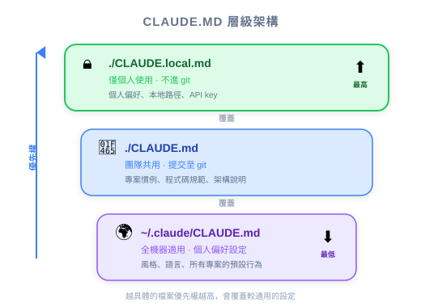
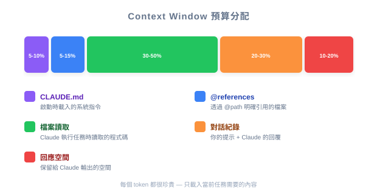

| 项目 | 细节 |
|---|---|
| 考试涵盖 | D3 — Effective Claude Code Usage (30%), D5 — Performance Optimization (12%) |
| Task Statements | 3.1 ★★★ (CLAUDE.md hierarchy), 5.1 ★★ (context preservation), 5.4 ★★ (large codebase context) |
| 考试场景 | S2 (Code Gen), S4 (Developer Productivity) |
| 课程来源 | claude-code-in-action / 02-getting-started / Lesson 07（视频 + 文字） |
Claude Code 通过三层配置文件系统（CLAUDE.md）管理项目 context。/init 通过分析代码库生成初始文件。三个层级 — global（所有项目）、project（通过 repo 共享）和 local（个人覆盖）。@ 语法让开发者将 Claude 指向特定文件。对 PM 来说：这是团队如何在组织中标准化 AI 辅助开发，以及如何管理 context window 预算。
/init + CLAUDE.md 代表新团队成员的 AI 助手从第一天就了解项目架构。| 概念 | 商业类比 |
|---|---|
| CLAUDE.md hierarchy | 公司政策层级：企业政策（global）< 部门政策（project）< 个人例外（local）。越具体覆盖越一般。 |
/init 命令 |
员工入职 — 阅读所有文档、理解组织、总结关键流程 |
CLAUDE.md 中的 @ file mention |
例行会议议程项目 — 总是在桌上，总是被讨论 |
交互式 @ mention |
临时会议主题 — 只在相关时提出 |
# memory 命令 |
更新团队 wiki — 跨人员变动持续存在的知识 |

| 阶段 | 动作 | CLAUDE.md 杠杆 |
|---|---|---|
| 1. 初始设置 | 技术主管在主 repo 上执行 /init |
生成包含项目架构的基线 CLAUDE.md |
| 2. 标准化 | 技术主管将编码标准、PR 惯例、测试要求加入 CLAUDE.md | 所有开发者通过版本控制继承相同规则 |
| 3. 个人化 | 个别开发者创建 CLAUDE.local.md 放个人偏好 | 个人风格不影响团队标准 |
| 4. 优化 | 团队在监控 context 使用后移除低价值的 @ 引用 |
更好的性能，更低的 token 成本 |
🎬 讲师视频洞察
讲师展示 CLAUDE.md「被包含在每个请求中」— 使其本质上是持久化的 system prompt。对 PM 来说，这代表 CLAUDE.md 是控制团队 AI 行为最具影响力的单一配置。
| 内容类型 | 放在哪里 | 原因 |
|---|---|---|
| 项目架构、构建命令 | ./CLAUDE.md（project） |
每个开发者都需要；版本控制 |
| 编码标准、PR 惯例 | ./CLAUDE.md（project） |
团队一致性；变更在 git 中追踪 |
| 个人编码风格偏好 | ~/.claude/CLAUDE.md（global） |
适用于你所有项目；不共享 |
| 实验性指令、个人 API key | ./CLAUDE.local.md（local） |
每项目覆盖；不 commit |
| Schema 文件、API 契约 | ./CLAUDE.md 中的 @ 引用 |
大多数请求需要的横切 context |
| 任务特定的文件 | 聊天中的交互式 @ |
一次性 context；不浪费 context window |
💡 PM 决策规则
如果影响整个团队，放在项目 CLAUDE.md。如果是个人的，放在 local 或 global。不确定时问自己：「新团队成员需要这个吗？」如果是，放项目 CLAUDE.md。

PM 应理解这个权衡，因为它影响性能和成本：
| CLAUDE.md 中更多 context | CLAUDE.md 中更少 context |
|---|---|
| Claude 始终知道项目细节 | Claude 可能每次需要重新发现文件 |
| 每次请求更高的 token 消耗 | 每次请求更低的 token 消耗 |
| 响应质量降低的风险 | 聚焦 context 带来更好的推理 |
| 对重复问题更快 | 首次探索略慢 |
甜蜜点：只将横切的、经常需要的文件放在 CLAUDE.md @ 引用中。让 Claude 通过工具发现其他一切。
你的 CTO 问：「我们如何确保所有 50 名使用 Claude Code 的开发者遵循我们的编码标准？」哪个方法正确？
一位开发者报告：「Claude Code 以前很快但现在很慢，答案也变差了。」调查发现他们上周在 CLAUDE.md 中加了 12 个 @ 文件引用。你建议什么？
@ 引用，将非必要的移到交互式 @ mention；只在 CLAUDE.md 中保留横切文件一位新开发者加入你的团队。他们从未使用过 Claude Code。在你的项目上进行高效 AI 辅助开发的最快路径是什么？
/init 生成全新的 CLAUDE.md